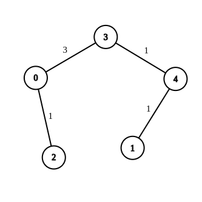
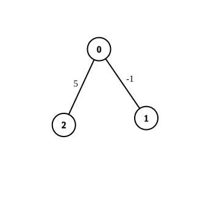
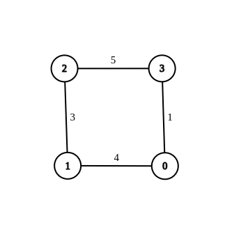

| Category | Difficulty | Likes | Dislikes |
|---|---|---|---|
| Algorithms | Hard | 732 | 152 |
google
You are given an undirected weighted connected graph containing n nodes labeled from 0 to n - 1, and an integer array edges where edges[i] = [ai, bi, wi] indicates that there is an edge between nodes ai and bi with weight wi.
Some edges have a weight of -1 (wi = -1), while others have a positive weight (wi > 0).
Your task is to modify all edges with a weight of -1 by assigning them positive integer values in the range [1, 2 * 109] so that the shortest distance between the nodes source and destination becomes equal to an integer target. If there are multiple modifications that make the shortest distance between source and destination equal to target, any of them will be considered correct.
Return an array containing all edges (even unmodified ones) in any order if it is possible to make the shortest distance from source to destination equal to target, or an empty array if it's impossible.
Note: You are not allowed to modify the weights of edges with initial positive weights.
Example 1:

Input: n = 5, edges = [[4,1,-1],[2,0,-1],[0,3,-1],[4,3,-1]], source = 0, destination = 1, target = 5
Output: [[4,1,1],[2,0,1],[0,3,3],[4,3,1]]
Explanation: The graph above shows a possible modification to the edges, making the distance from 0 to 1 equal to 5.Example 2:

Input: n = 3, edges = [[0,1,-1],[0,2,5]], source = 0, destination = 2, target = 6
Output: []
Explanation: The graph above contains the initial edges. It is not possible to make the distance from 0 to 2 equal to 6 by modifying the edge with weight -1. So, an empty array is returned.Example 3:

Input: n = 4, edges = [[1,0,4],[1,2,3],[2,3,5],[0,3,-1]], source = 0, destination = 2, target = 6
Output: [[1,0,4],[1,2,3],[2,3,5],[0,3,1]]
Explanation: The graph above shows a modified graph having the shortest distance from 0 to 2 as 6.
Constraints:
1 <= n <= 1001 <= edges.length <= n * (n - 1) / 2edges[i].length == 30 <= ai, bi < nwi = -1 or 1 <= wi <= 107ai != bi0 <= source, destination < nsource != destination1 <= target <= 109